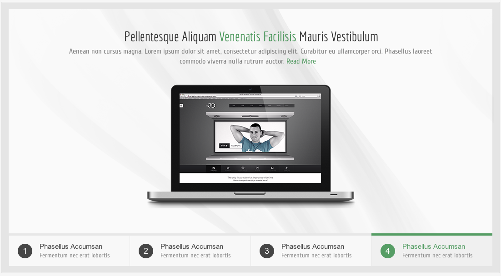
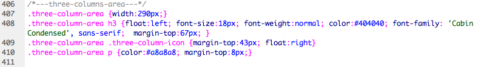

Created: 24/05/2012
By: imtheme & kupgrup
Email:
iamilkay@hotmail.com
Thank you for purchasing our theme. If you have any questions that are beyond the scope of this help file, please feel free to email via our users page contact form: Iamilkay. Thanks so much!
This theme is a fixed layout with one column. All of the information within the main content area is nested within a div with an id of "wrapper". The general template structure is the same throughout the template. Here is the general structure.
In this theme, we are using the system of "foundation". There are two files with foundation system. The first one is reset.css and the second one is grid.css. If you do not change these css files, the structure of theme keeps its originality. The files that determine style of the theme are style.css and red.css that we use it as default. You can change all field in the theme with style.css. You can change color, backgroundcolor, font family and font size with red.css. Let's learnd css and html structure step by step.
Logo: (HTML)
HTML Preview code:
CSS Preview code:
Navigation Menu (Superfish Multilevel Menu):
Preview Code:
Navigation Menu Css Code:
Preview Css Code
Preview HTML
Slide HTML:
Preview code:
Preview Web:
Advert:
Preview code:
Preview Web:
Preview CSS:
TAB MENU HTML:
Preview code:
Preview Web:
CSS STYLESHEET:
Open css//green.css
Preview code:
Step One:
If you want to change the color of the theme, please open css/green.css
Step Two:
Please find the css tag: .theme-background
Step Three:
please change hexe like this # For example: #FFFFFF
Step Four:
Save it and try it. That's all.
This theme imports three Javascript files.
I've included five psds with this theme:
I've used the following images, icons or other files as listed.
Once again, thank you so much for purchasing this theme. As I said at the beginning, I'd be glad to help you if you have any questions relating to this theme. No guarantees, but I'll do my best to assist. If you have a more general question relating to the themes on ThemeForest, you might consider visiting the forums and asking your question in the "Item Discussion" section.
Iamlikay